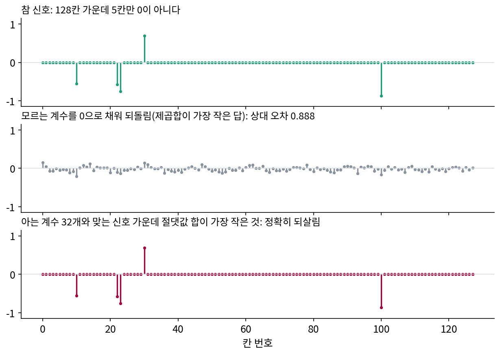
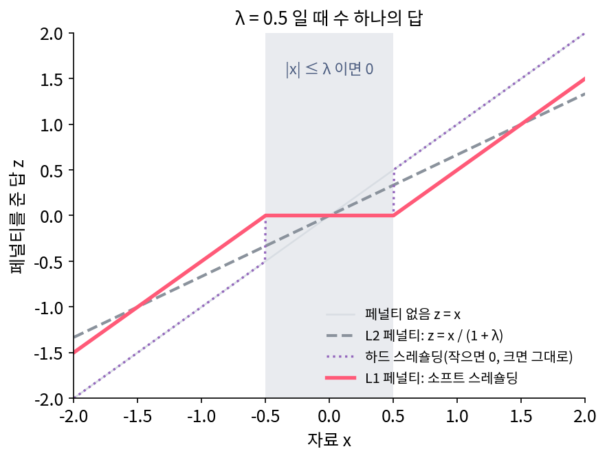
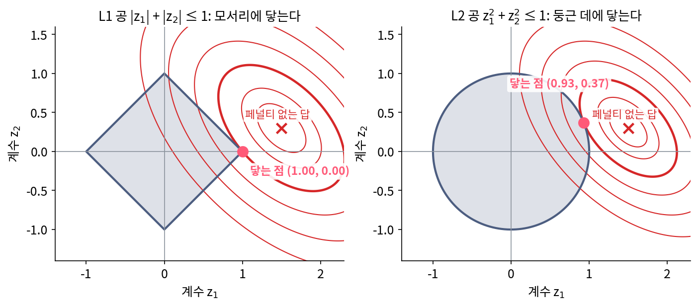

L1 페널티: 모서리가 0을 만든다
축이 차원보다 많으면 같은 점을 적는 방법이 끝없이 많다. 평면에 축 셋을 두고 점 (1, 0)을 적을 때, 계수의 제곱합이 가장 작은 답 (2/3, 1/3, −1/3)은 축 셋을 모두 쓰고, 축 하나만 쓰는 답 (1, 0, 0)은 따로 있었다. 우리가 원하는 것은 0이 아닌 계수가 가장 적은 답이다. 그런데 0이 아닌 계수의 수를 직접 줄이려면 「어느 축을 쓸까」의 묶음을 하나하나 시험해야 한다. 축이 6개면 묶음이 2⁶ = 64가지라 해 볼 만하지만, 축이 1,000개면 2¹⁰⁰⁰가지다. 0이 아닌 계수의 수를 세지 않고도, 적은 축을 쓰는 답을 고르게 하는 기준이 있을까?
역사: 고르기와 줄이기 사이에서
통계학자들은 회귀 분석에서 같은 고민을 하고 있었다. 설명 변수가 많을 때 몇 개만 남기는 부분 집합 고르기는 결과를 읽기 쉽지만, 변수를 넣거나 빼는 이산적인 결정이라 자료가 조금만 바뀌어도 고르는 변수가 크게 달라졌다. 계수를 모두 조금씩 줄이는 능선 회귀(제곱합 페널티)는 안정적이지만 어떤 계수도 0으로 만들지 않아 읽기 어려웠다. 1996년 토론토 대학의 티브시라니(Robert Tibshirani)는 「라쏘로 하는 회귀의 줄이기와 고르기(Regression Shrinkage and Selection via the Lasso)」에서 두 방법의 좋은 점을 함께 얻으려 했다. 계수의 제곱합 대신 절댓값의 합을 묶어 두자, 어떤 계수는 줄어들고 어떤 계수는 정확히 0이 되었다. 그는 브라이먼(Leo Breiman)이 앞서 내놓은 「음 아닌 가로트」(최소제곱 계수에 음이 아닌 배율을 곱해 줄이는 방법)에서 실마리를 얻었다고 적었고, 왜 0이 나오는지를 계수가 둘일 때의 그림 한 장으로 보였다. 오차의 타원 등고선이 마름모꼴 제약 영역에 처음 닿는 곳이 꼭짓점이면 계수 하나가 0이 된다는 그림이다. 축이 직교할 때 라쏘의 답은 도노호와 존스톤(Iain Johnstone)이 웨이블릿 계수의 노이즈를 걷어 내려고 쓰던 소프트 스레숄딩과 같은 꼴이라는 점도 함께 적었다.
신호처리 쪽에서는 첸·도노호·손더스가 넘치는 딕셔너리에서 신호와 꼭 맞는 표현 가운데 계수의 절댓값 합이 가장 작은 것을 고르는 기저 추구(basis pursuit)를 내놓았다(학술지판은 1998년). 그때까지 이것은 「적은 축을 쓰는 답」을 대신하는 그럴듯한 기준이었을 뿐이다. 2004년 칸데스(Emmanuel Candès)·롬버그(Justin Romberg)·타오(Terence Tao)는 의료 영상에서 흔히 쓰는 시험 그림(로건–셰프 팬텀) 하나의 푸리에 계수를, 반지름 방향의 직선 22개 위에서 512개씩만 알 때 그림을 되살리는 실험을 했다. 모르는 계수를 0으로 채우면 그림이 크게 일그러졌지만, 아는 계수와 맞는 그림 가운데 절댓값 합(그림의 이웃 칸 차이의 절댓값 합)이 가장 작은 것을 고르자 그림이 정확히 되살아났다. 그들은 논문에서 정확히 되살아난 이 실험 결과를 「놀랍다」고 적었다. 2006년 그들의 논문과 도노호의 「압축 센싱(Compressed Sensing)」은, 신호가 충분히 희소하고 재는 방식이 고르면 절댓값 합이 가장 작은 답이 0이 아닌 계수가 가장 적은 답과 같아진다는 조건을 보였다.

수 하나에서 시작하기
절댓값 페널티가 왜 0을 만드는지, 계수가 하나뿐인 가장 작은 문제에서 보자. 축이 하나이고 자료도 수 하나 x라면, 계수 z를 고르는 기준은 「x와 가깝게」와 「z를 작게」의 줄다리기다. 가까움은 ½(z − x)², 작음의 페널티는 λ|z|로 재고 둘의 합을 가장 작게 한다. λ = 0.5일 때 x = 0.8이면 답은 0.3이고, x = 0.3이면 답은 정확히 0이다.
까닭은 |z|의 꺾인 곳에 있다. z > 0인 쪽에서 합을 z로 미분한 값은 (z − x) + λ이므로 z = x − λ에서 0이 된다. 이 답 x − λ가 양수일 때, 곧 x > λ일 때만 이 답이 성립한다. z < 0 쪽도 같은 셈으로 x < −λ일 때 z = x + λ다. 그 사이(|x| ≤ λ)에서는 z = 0에서 오른쪽으로 가도 왼쪽으로 가도 합이 커진다. |z|가 z = 0에서 기울기 −λ에서 +λ로 한 번에 꺾이므로, 맞추기 항의 미분값 −x가 그 폭 안에 들면 0에 머무는 것이 가장 낫다. 제곱 페널티 ½λz²는 0에서 기울기가 0이라 이런 버팀이 없다. 그래서 답이 x/(1 + λ)로 줄어들기만 할 뿐 0이 되지 않는다(x = 0.3이면 0.2).
작은 값은 0으로 만들고 큰 값은 λ만큼 0 쪽으로 당기는 이 연산을 소프트 스레숄딩(soft-thresholding)이라 부른다. 문턱보다 작으면 0으로 만들고 크면 그대로 두는 하드 스레숄딩(hard thresholding)과 달리, 문턱을 넘는 곳에서 값이 뛰지 않는다.

계수가 여럿이면 페널티는 계수마다의 절댓값을 모두 더한 λ(|z₁| + |z₂| + …)이다. 계수 둘일 때 「절댓값 합이 1 이하」인 영역은 꼭짓점이 축 위에 있는 마름모이고, 「제곱합이 1 이하」인 영역은 원이다. 맞추기 항의 등고선(타원)이 이 영역에 처음 닿는 자리가 답이다. 아래 그림의 예에서는 마름모의 꼭짓점 (1, 0)에 닿아 둘째 계수가 0이 되고, 원에는 (0.93, 0.37)에 닿아 두 계수가 모두 0이 아니다. 마름모는 꼭짓점이 뾰족하게 튀어나와 있어서 타원이 꼭짓점에 먼저 닿기 쉽다. 늘 그런 것은 아니다. 타원의 가운데와 기울어진 방향을 바꾸면(가운데 (1.2, 0.5)) 마름모의 변 위 (0.85, 0.15)에 닿아 두 계수가 모두 살아남는다. 차원이 높을수록 마름모(정팔면체와 그 고차원 짝)의 꼭짓점과 모서리가 차지하는 비율이 커져서, 0인 계수가 더 쉽게 나온다.

이렇게 계수의 절댓값 합에 세기 λ를 곱해 더하는 페널티를 L1 페널티 (절댓값 합 페널티, L1 penalty)이라 하고, 맞추기 항에 L1 페널티를 더해 계수를 고르는 문제를 라쏘(lasso)라 부른다. 딕셔너리 A로 점 x를 적을 때는 아래 목적을 가장 작게 하는 z를 고른다.
손으로 따라갈 수 있는 작은 예를 하나 정하자. 칸이 넷인 신호 x = (2, 1, 1, 1)은 바탕 1 위에 첫 칸만 1 더 튄 모양이다. 축은 여섯 개를 둔다. 칸 하나만 1인 칸 축 넷(칸1~칸4), 네 칸이 모두 ½인 고른 축 (½, ½, ½, ½), 앞 두 칸은 ½이고 뒤 두 칸은 −½인 계단 축 (½, ½, −½, −½)이다. 이 신호는 칸1 + 2·고른으로 축 둘만 써서 꼭 맞게 적힌다. 칸 축만 쓰면 (2, 1, 1, 1)로 넷을 쓴다(절댓값 합 5). 축 여섯 개로 꼭 맞게 적는 방법 가운데 제곱합이 가장 작은 것은 (1.25, 0.25, 0.5, 0.5, 1.25, 0.25)로 여섯을 모두 쓰고(절댓값 합 4), 절댓값 합이 가장 작은 것은 (1, 0, 0, 0, 2, 0)으로 둘만 쓴다(절댓값 합 3, 계산은 sources/sparse-coding/s2_l1.py). 꼭 맞추기를 고집하지 않고 라쏘로 풀면 λ = 0.5에서 답은 (0.667, 0, 0, 0, 1.667, 0)이다. 쓰는 축은 같고, 두 계수가 0 쪽으로 조금씩 당겨져 되살린 신호가 (1.5, 0.833, 0.833, 0.833)이 된다. 이 답을 실제로 어떻게 계산하는지는 곧 「경사 한 스텝 + 소프트 스레숄딩」으로 본다.
위젯에서 λ를 0에서 키워 가면 계수가 하나씩 0으로 떨어진다. λ마다의 답을 이은 선을 라쏘 경로라 한다. 어느 λ에서 어느 계수가 떨어지는지는 아래 문제 5에서 손으로 찾는다.
ML에서: 0이 된 가중치는 적지 않아도 된다
L1 페널티는 신경망과 선형 모델의 가중치에도 쓴다. 0이 된 가중치는 저장할 필요도 계산할 필요도 없어서, 모델을 적는 비트가 준다. 같은 세기의 제곱합 페널티(가중치 감쇠)를 주면 어떻게 될까? 두 페널티가 같은 가중치를 어떻게 다르게 바꾸는지는 아래 문제 6에서 계산해 본다.
문제 4. 조이스틱 데드존
게임 패드의 조이스틱은 손을 떼어도 완전히 가운데로 돌아오지 않아 작은 기울임 값이 늘 들어온다. 그래서 기울임 b의 절댓값이 0.2 이하이면 0으로 친다. 넘을 때 처리하는 방법이 둘 있다. 「자르기」는 넘으면 b를 그대로 쓰고, 「빼기」는 넘으면 0.2만큼 0 쪽으로 당긴 값을 쓴다. (가) b = 0.15, 0.5, −0.9일 때 두 방법의 값은? (나) b = 0.19에서 0.21로 아주 조금 더 기울이면 두 방법의 값은 각각 어떻게 바뀌는가?

(가)는 0.15가 둘 다 0, 0.5는 자르기가 0.5, 빼기가 0.3, −0.9는 자르기가 −0.9, 빼기가 −0.7이요.

(나)는 어때요? 게임하는 사람 손으로 느껴 봐요.

자르기는 0.19에서 0이다가 0.21에서 갑자기 0.21이 돼요. 캐릭터가 서 있다가 휙 튀어 나가겠네요. 빼기는 0.01이라서 살살 움직이기 시작하고요.

빼기가 수 하나의 L1 답이랑 똑같아. 문턱 λ가 0.2인 소프트 스레숄딩이야. 자르기는 하드 스레숄딩이고.

과제 점수에서 지각 감점을 「10분 넘으면 0점」으로 하면 9분과 11분이 하늘과 땅 차이인데, 「10분 넘은 만큼만 감점」이면 억울한 사람이 없죠. 그 차이네요.
문제 5. 계수는 어느 λ에서 떨어지나
네 칸 신호 x = (2, 1, 1, 1)과 축 여섯 개(칸1~칸4, 고른 (½, ½, ½, ½), 계단 (½, ½, −½, −½))로 라쏘를 푼다. (가) 계수가 모두 0인 답이 되려면 λ가 얼마 이상이어야 하는가? (나) λ를 그보다 조금 작게 하면 처음으로 0을 벗어나는 축은? (다) 둘째로 0을 벗어나는 축과 그때의 λ는? (풀어 본 뒤 위젯 1에서 λ를 움직여 확인해 보자.)
(가)는 λ가 엄청 커야겠죠. 신호의 절댓값 합이 5니까 5 이상이요?
수 하나 문제에서 답이 0이 되는 조건이 무엇이었죠? 맞추기 항의 그래디언트가 꺾인 곳의 폭 안에 들어야 했어요. 계수가 모두 0일 때, 계수 zⱼ 쪽으로 본 맞추기 항의 그래디언트 성분은 얼마예요?
z = 0에서 ½‖x − Az‖²을 zⱼ로 미분하면 −aⱼ·x예요. 이게 폭 [−λ, λ] 안에 들어야 하니까, 모든 축에서 |aⱼ·x| ≤ λ이면 0이 답이에요.

내적을 다 구하면 칸1이 2, 칸2~칸4가 1, 고른이 (2 + 1 + 1 + 1)/2 = 2.5, 계단이 (2 + 1 − 1 − 1)/2 = 0.5예요. 가장 큰 게 2.5니까 λ ≥ 2.5면 모두 0이에요. 5가 아니네요.
(나)는요?
내적이 가장 큰 고른 축이 먼저 나오겠죠. 위젯으로 보니까 λ = 2.4에서 고른 계수가 0.1이에요.
(다)는 고른 축만 쓰는 동안 계수가 2.5 − λ이에요. 고른 축이 신호를 일부 가져가니까, 남은 신호와 다른 축의 내적이 바뀌겠네요.
칸1과의 내적은 어떻게 되죠?

2 − (2.5 − λ)/2 = 0.75 + λ/2예요. 이게 λ와 같아지는 곳이 λ = 1.5. 그 아래에서 칸1이 나와요.

그래요. 처음 내적이 2인 칸1보다, 고른 축이 신호를 일부 가져간 뒤의 내적이 문제였죠. 칸2~칸4는 고른 축이 바탕을 가져간 뒤로 내적이 더 줄어서 끝내 나오지 않아요.

실해석 시간에 |z|의 미분을 「꺾인 곳에서는 기울기가 한 값이 아니라 구간」이라고 배웠는데, 그 구간이 바로 0에 머물 수 있는 폭이었네요.
문제 6. L1 페널티와 가중치 감쇠
서로 직교하고 길이가 고른 특징 넷으로 선형 모델을 학습했더니 최소제곱 가중치가 w = (0.8, 0.05, −0.3, 0.02)였다. (가) L1 페널티 λ = 0.1을 더하면 가중치는? (나) 제곱합 페널티 ½λ‖w‖²(λ = 0.1)을 더하면? (다) 0이 아닌 가중치만 저장한다면 어느 쪽이 작은가?
특징이 직교하면 가중치마다 따로 풀리니까, (가)는 가중치마다 소프트 스레숄딩이에요. (0.7, 0, −0.2, 0).
(나)는 가중치마다 w/(1 + λ)라서 (0.727, 0.045, −0.273, 0.018). 하나도 0이 안 돼.

근데 0.045나 0.018이면 거의 0 아니에요? 저장할 때 반올림하면 되잖아요.
반올림할 문턱은 누가 정하죠? 그리고 그 문턱으로 반올림한 모델은 무엇을 가장 작게 한 답일까요?
아, 학습이 끝난 다음에 제가 임의로 자르는 거네요. L1은 목적 안에 「0이면 이득」이 들어 있어서, 학습이 스스로 0을 골라요. (다)는 L1 쪽이 숫자 둘만 저장하면 되고요.

문제 4로 말하면 L1은 처음부터 데드존이 있는 조이스틱이고, 제곱합 페널티는 감도만 낮춘 조이스틱이야. 감도만 낮추면 손을 떼도 여전히 조금씩 움직여.